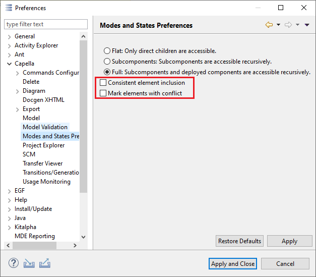

The Modes and States Viewpoint Layer for XAB Diagrams can style Configuration Elements in different ways, depending on two preferences set under Window->Preferences->Capella->Modes and States Preferences:

If this option is selected, an element appears greyed out if at least one of the Configurations shown on the diagram excludes the element. If all shown Configurations include the element, it appears with its default style. If the option is not selected, an element is greyed out if at least one shown Configuration excludes the element.
This option only has an effect if Consistent Element Inclusion is enabled. If the option is selected, elements that are excluded in one, but included in a different Configuration, and these Configurations are shown on the diagram, are displayed in a different color to indicate this conflict.